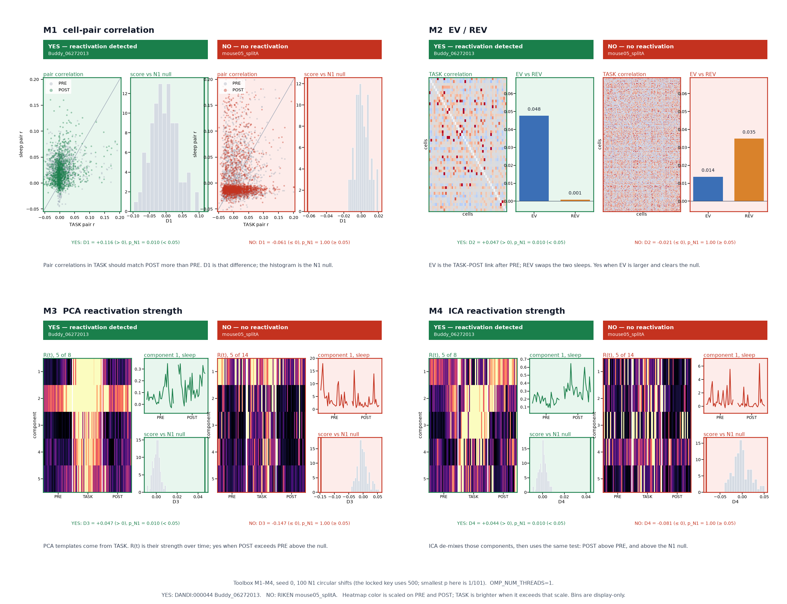

ReacDetect
Can these sleep recordings be trusted to show reactivation?
Pick a ready recording. Four standard methods each test it against the same shuffled control, and each one reports on its own.
Ready recordings, already mapped. Tap one to switch.
What this data can support
Eligible
N/A The data cannot support it. Expected, not a failure.
Error Something broke while running.
Running
Summary
Details
Reactivation score
Each dot is one session or split. Above zero means POST resembles TASK more than PRE did.
Evidence against the N1 null
p from 500 circular shifts, log scale. Below the dashed line is p < 0.05.
How each method says yes or no
Green: DANDI:000044 Buddy_06272013, reactivation detected. Red: RIKEN mouse05 session A, no reactivation. Scores and curves are the toolbox result, 100 shuffled controls.

UX prototype over real results from the Shift Happens toolbox. Only the run timing is simulated. Repository